SCANO 神经算子替代 CFD 求解器，在 RTX 视口中即时给出新工况下的温度与流场
案例：一座整机房 · 50 机柜 / 317 服务器槽位 / 6 台精密空调 · 百万单元 CFD 网格
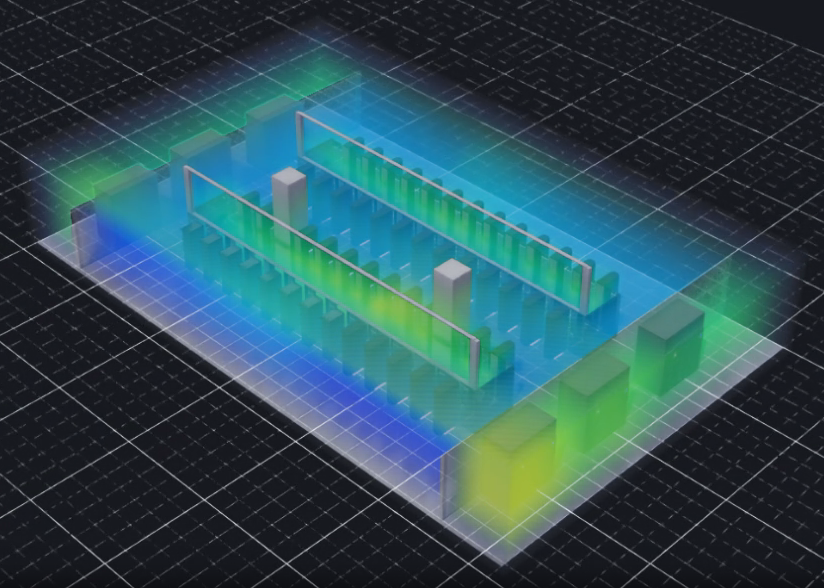
Case
整机房稳态热场，不是简化盒子或单机柜
机房热设计的日常工作是反复问「如果」：如果这一排机柜加满功率会不会过热？如果把空调送风调低两度能省多少电？每问一次，传统流程就要重跑一次 CFD —— 在这个规模上，一次未收敛的 1000 步求解也要 241 秒，跑到真正收敛则以小时计。
我们把这一步换成神经算子：边界条件变了，直接预测新的三维速度、压力与温度场，不再迭代。于是「问一次」的代价从分钟级降到秒级 —— 模型本身的单次前向是 0.5–0.6 秒，本页演示这条未做工程优化的完整链路则是 45–100 秒，仍然把交互式改设计变成了可行的事。
Acceleration
同一台机器、同样 8 核并行下现场计时的墙钟时间
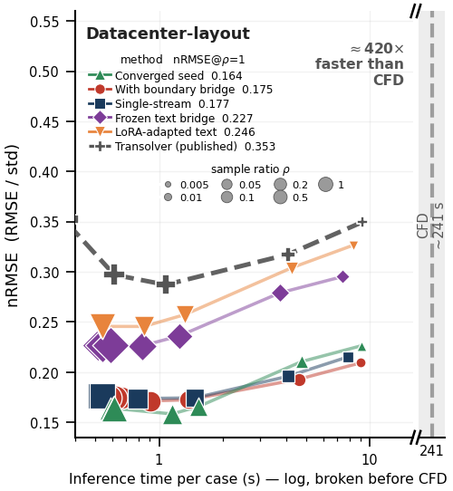
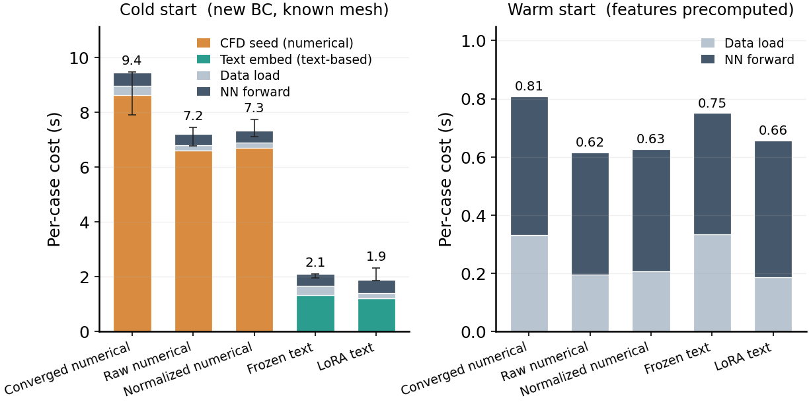
分母刻意取「1000 步、停在完全收敛之前」的 CFD 求解，而不是生成训练标签所用的完整预算（百万单元热场数据集 500 步、机房布局数据集 5000 步）。真实工程中跑到收敛的求解耗时更长，此处报告的倍数是下界。同时需要说明：这是墙钟对比（代理模型的一个 rank 对阵 8 个 CPU 核），并未按 FLOP 或能耗归一，也未做资源对等。
NVIDIA Stack
这套演示实际用到的组件，以及各自承担什么
宿主应用
演示构建在 kit-cae 之上。Kit 进程常驻，加载 CAE 扩展、驱动视口与串流服务，整个交互过程中不重启。
场景描述
机房几何以 USD 组合：50 台机柜、6 台空调、地板与围栏各为独立 prim，可逐个显隐与选中。重复机柜通过场景图实例化共享同一原型。
体渲染
三维温度/速度场以体绘制方式渲染，与几何同处一个视口。ROI 裁剪、色标域与透明度传递函数均在运行时改写。
CFD 数据通路
负责把 CFD 结果读进 USD 场景并体素化：CreateCaeVizVolume 建体、CreateCaeVizStreamlines 追流线、CreateCaeVizMeshPrim 建面。
渲染与串流
光线追踪在服务器端单张 GPU 上完成，画面经 WebRTC 串流到浏览器。访问端不需要显卡，一台笔记本即可操作。
神经算子推理
SCANO 推理跑在与渲染卡分离的另一张 GPU 上，避免抢占视口帧率。多卡时按论文的 TTA 路径把采样点池切分给各 rank。
换句话说，NVIDIA 生态在这里承担了除求解之外的全部环节：USD 描述机房、IndeX 画出物理场、RTX 渲染、WebRTC 送到浏览器、CUDA 跑推理。而原本最重的求解环节，被神经算子取代了。
Multi-GPU
这是仓库自己的实现，也是最直接的一处 NVIDIA 关联
百万单元的整图放不进一块卡，所以模型从来不是一次吞下整张网格：每一趟只抽一批 pivot 单元，连同它们的 2 跳邻域构成子图前向一次；节点被不同批次重复覆盖，最后按覆盖次数取平均。论文把这套推理期的重叠平均称作 test-time augmentation。
多卡就切在这一层：pivot 池用与卡数无关的同一个随机种子打乱后，按连续等分切给 R 张卡，每张卡只给自己那一份打分；各卡各自持有整图尺寸的累加缓冲与计数缓冲，最后用 NCCL 的 all_reduce(SUM) 把它们相加，再统一除以逐节点计数。因为切分互斥、种子一致，R 张卡的 pivot 并集恰好等于单卡的完整池。
这里有个容易讲错的地方。决定精度的是累积的重叠趟数，不是卡数本身 —— 论文专门验证过：1 张卡跑 20 趟（nRMSE 0.6018）与 6 张卡各跑 4 趟（0.5986）落在同一处。卡数只是把这些趟数并行地拿到手。
本演示把采样比钉在 ρ = 0.02，覆盖整个池恒定需要 50 趟：单卡自己跑完 50 趟，两卡各跑 25 趟。累积趟数没变，平均出来的场就没变 —— 实测两者 nRMSE 相同到小数点后五位（0.192502 与 0.192518），省下的纯粹是墙钟时间。
论文的配置则是 ρ = 1.0，每张卡一趟就用完自己那份，于是 R 张卡等于 R 趟累积、单卡只有 1 趟 —— 这时候卡数就真的会改变精度。论文原话是「报告的精度因此取决于 rank 数」，并给了成对数字：机房布局数据集上单流对照从 R=1 的 0.3488 变到 R=6 的 0.1948。
本机上的已知限制：1 卡与 2 卡稳定可用，3 卡及以上会在 rank 0 上以 CUDA-capable device(s) is/are busy or unavailable 失败，在空闲卡上可复现，尚未定位。所以演示默认单卡；上面 6 卡那一档只按论文配置做趟数推算，未在本机计时。
Live Demo
调参数 → 重算物理场 → 视口里直接看结果
在浏览器里直接调整每一台服务器的功率与流率、每一台空调的送风温度与风量，点击 simulate，常驻推理进程给出新的三维温度场，随即在 RTX 视口中体渲染出来。整个回路无需重新划分网格，也无需等待求解器收敛。
从点击到新温度场出现在视口里，端到端 45–100 秒，取决于这次改动是否需要重跑 CFD 种子步。三次连续实测中，模型前向稳定在 14.4–14.7 秒，其余全部是工程开销：推理子进程启动（torch 导入与模型载入）、一步种子求解、以及把非结构结果重采样成 IndeX 能体素化的规则网格（约 2.3 秒）。同一算例用 CFD 求解器跑 1000 步需要 241 秒，且之后还要另做后处理。
与上文「0.5–0.6 s」的口径差别值得说明：那是论文里模型常驻、特征已预计算时的单次前向，本演示则是没有做过工程优化的完整链路 —— 每次点击都重新拉起推理进程、重新载入模型，并额外做一次重采样。把模型常驻化、跳过重采样即可去掉其中绝大部分，但那会让演示代码偏离论文代码，所以这里没有做。
同一个视口里的四种可视化
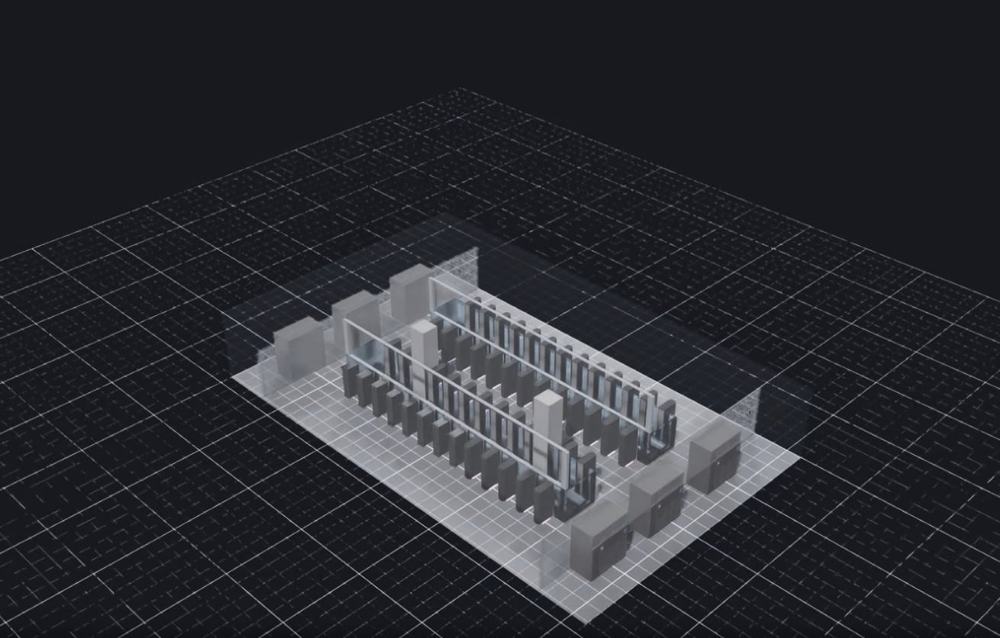
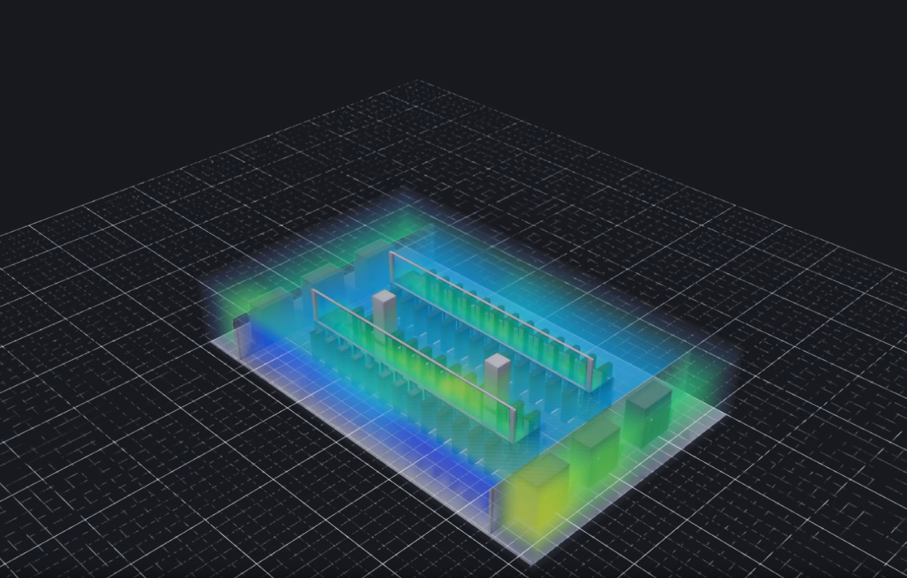
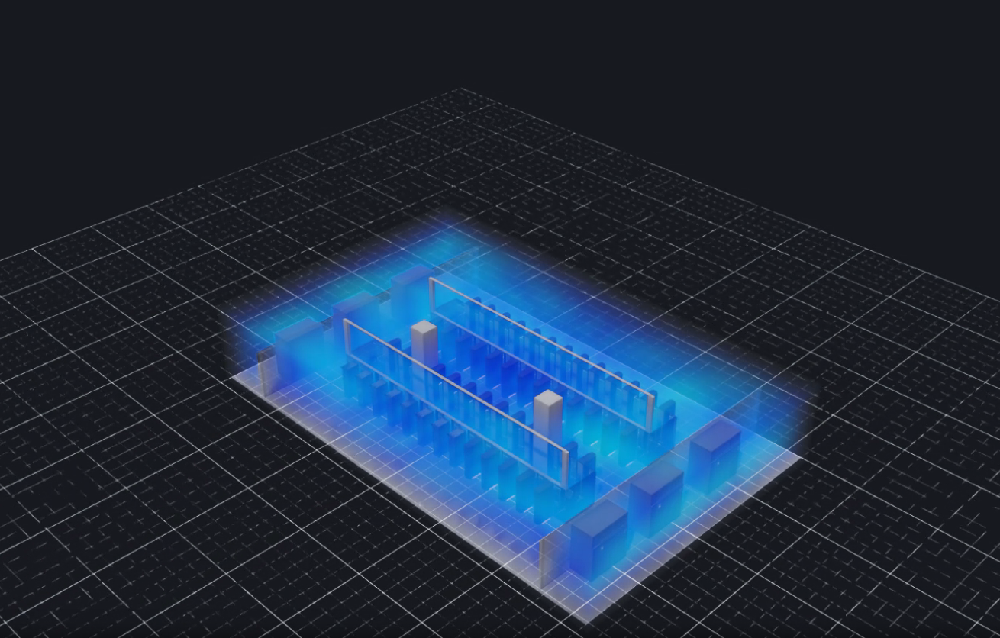
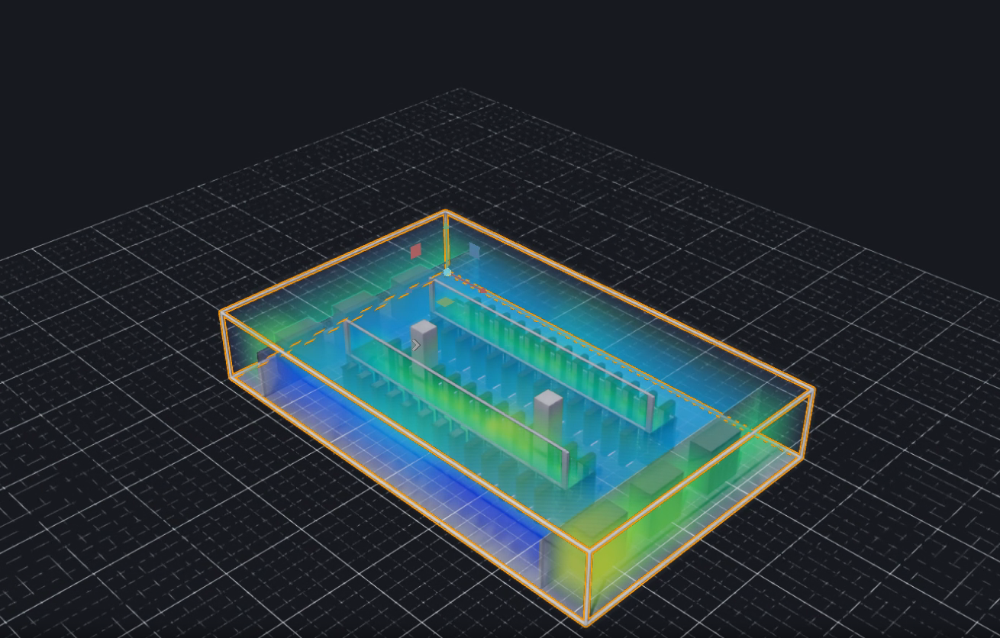
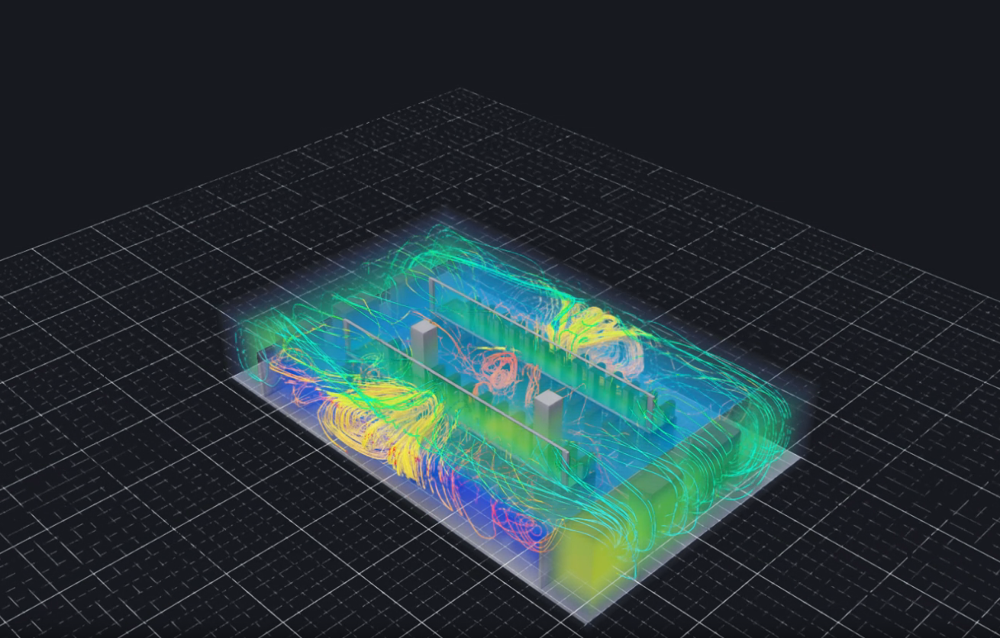
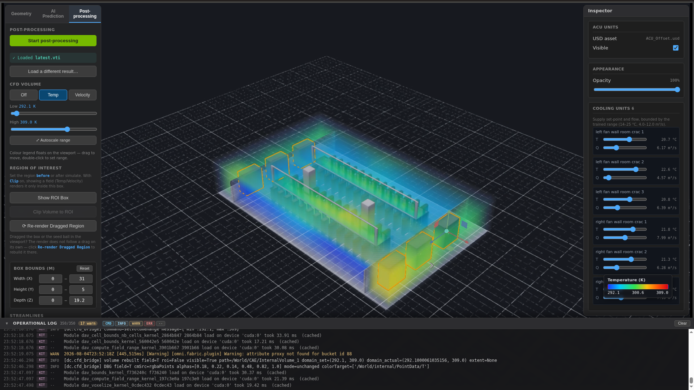
热点从出现到消除
让热点自己长出来，再把它压回去 —— 三台空调停机，机房失去 52% 的制冷量；随后把在役机组风量提到 1.8 倍、送风温度降到 15 °C。下面两段动画是同一组工况的 两种看法：左边是温度场，右边是同一时刻的气流组织。它们由 CFD 求解器算出，不是代理模型的预测 —— 这一节展示的是 Omniverse 这一侧的渲染能力，代理模型的加速与精度见前文。
三个工况（正常 / 故障 / 干预）各为一次稳态 CFD 求解，工况之间按场逐点过渡。 两段动画全程同一相机；温度场那段的色标域固定在 15.0–43.6 °C，所以同一颜色在任意时刻对应同一温度， 画面上圈出的是当前最热区域。
在浏览器里亲手试一次
演示在服务器的单张 GPU 上渲染，经 WebRTC 串流到你的浏览器，本地无需显卡。同一时刻只支持一位访客连接。
▶ 打开 Omniverse 实时演示Results
百万单元机房网格上的三维速度、压力与温度场
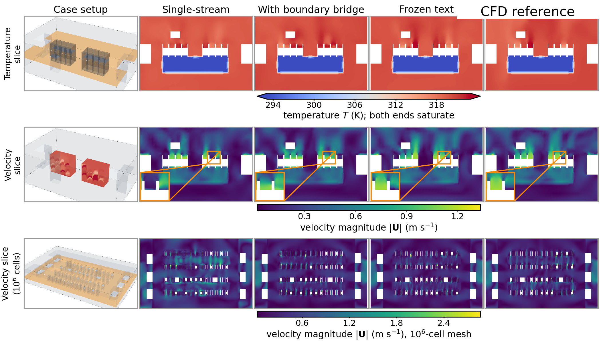
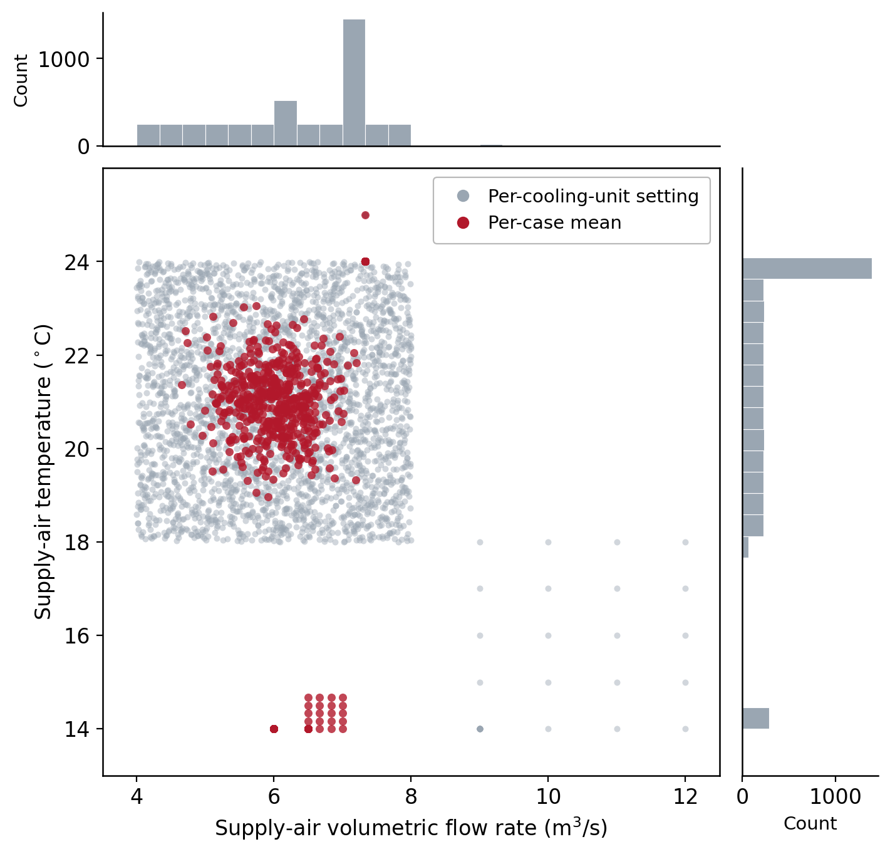
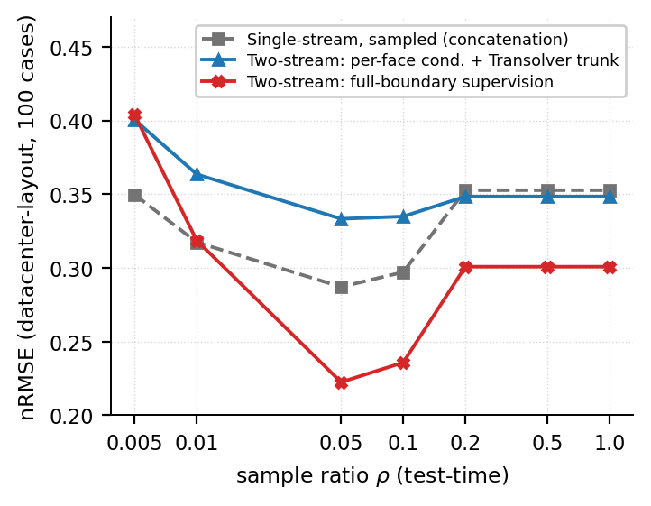
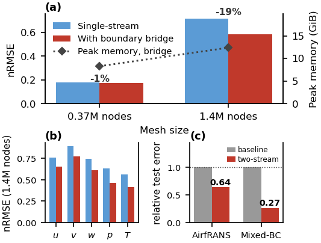
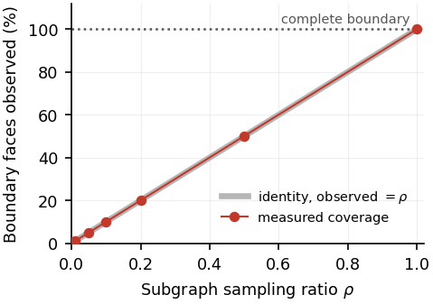
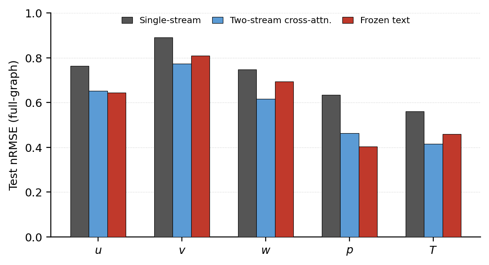
Citation
BibTeX
@inproceedings{scano2026,
title = {SCANO: Restoring Boundary-Condition Completeness in Sampled
Meshes with a Sliced-Cross-Attention Neural Operator for
3D Thermal Fields},
author = {Anonymous Submission},
booktitle = {Under Review},
year = {2026}
}
训练十个机房布局分支共耗费 2,152 GPU-hours（每分支 2,000 个 epoch）。推理与本页演示则只需单张 GPU。标签由 buoyancy 耦合的稳态不可压求解器在固定 SIMPLE 预算下生成。